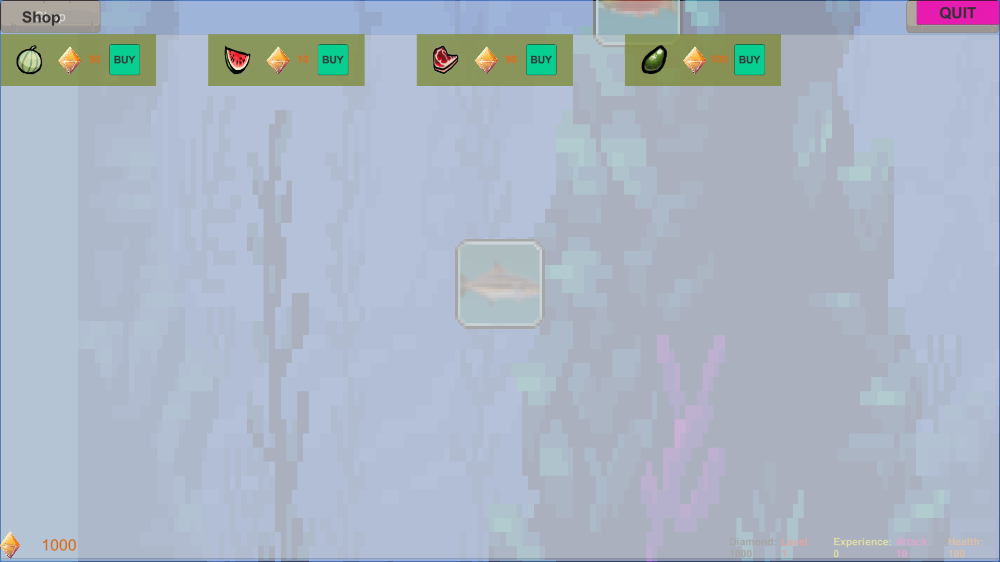

Description: A program used to create todo lists for any day and provide a time it must be done. Includes a feature that allows the user to move leftover todos from one day to another day.
Technologies: React, JSX, CSS, Git/GitHub, JSON, Material UI
Description: A program used to organize earnings and taxes, perform searches on past income and summarize its data.
Technologies: Django, Python, HTML, CSS, Bootstrap
Description: A single player math game that requires answering questions that involve the four basic mathematical operations to defeat the enemy.
Technologies: Unity, C#

Description: A game where the player raises a pet shark through hunting, eating food bought from the in-game shop and completing the battle pass challenges.
Technologies: Unity, C#


Description: A full stack web application that allows users to create polls, vote on polls, and view poll results.
Technologies: Python, HTML, CSS, JS, Git/GitLab, React, Django.